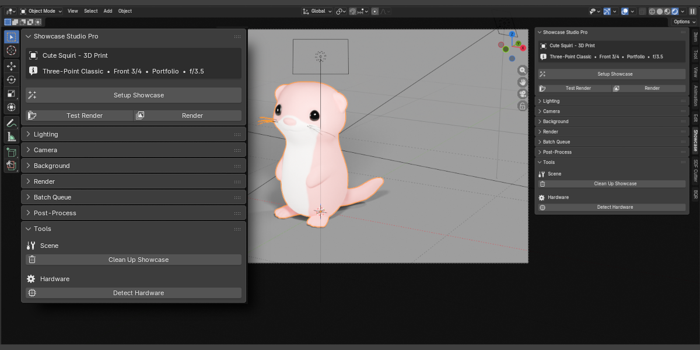

Getting Started
Requirements
- Blender 4.0 or later
- Cycles or EEVEE render engine
- Windows, macOS, or Linux
Installation
Download the zip
Do not unzip — Blender installs directly from the zip archive.
Open Blender Preferences
Go to Edit → Preferences → Add-ons.
Install from Disk
Click Install from Disk, navigate to the downloaded zip, and confirm.
Enable the add-on
Search for "Showcase Studio" and tick the checkbox.
Finding the Panel
Open the 3D Viewport, press N to open the N-panel, then click the Showcase tab.
Quick Setup (One-Click)
The Setup Showcase button runs lighting, camera framing, and background setup in a single click.
In Pro and Ultimate, Setup Showcase also applies Depth of Field automatically if DOF is enabled in the panel.
Steps
Select your object
Click the mesh or armature you want to showcase. For armatures, the add-on uses all child meshes automatically.
Click Setup Showcase
Found at the top of the Showcase panel. Creates lights, positions the camera, and applies the background.
Switch to Rendered viewport
Press Z and choose Rendered, or click the sphere icon in the viewport header.

Lighting
Choose a preset and click Apply Lighting. All lights are created in a dedicated collection and auto-scaled to the active object's bounding sphere — so the same preset produces consistent results on any size asset.
Settings
| Setting | Type | Description |
|---|---|---|
| Lighting Preset | Dropdown | Select from Basic presets (Lite) or all presets (Pro/Ultimate) |
| Intensity Pro | Slider 0.1–5.0× | Global brightness multiplier for all showcase lights. ⚡ live — updates viewport instantly |
Basic Presets Lite
Studio Presets Pro
Cinematic Presets Pro
Product Photography Presets Pro
Lights are deleted and recreated each time you Apply Lighting — switching presets always produces a clean result with no leftover lights.
Camera & Framing
Click Frame Object to position the showcase camera. Camera distance is calculated automatically from the object's bounding sphere — no guessing required.
Settings
| Setting | Type | Description |
|---|---|---|
| Angle Preset | Dropdown | Choose one of 8 standard angles or Custom to enter values manually |
| Custom Azimuth | Angle ° | Horizontal rotation around the object. Shown only when Angle = Custom |
| Custom Elevation | Angle ° | Vertical tilt. Negative values look up at the object. Shown only when Angle = Custom |
| Focal Length | 20–200 mm | Camera lens. ⚡ live — repositions camera and updates lens instantly |
| Padding | 0–50 % | Space around the object edges. ⚡ live — reframes the camera instantly |
Angle Presets
Background
Click Apply Background to set the scene world shader and optionally create a floor plane sized to the object.
Background Types
| Type | Controls | Description |
|---|---|---|
| Solid Color | Color picker | Single flat color applied via world shader nodes |
| Gradient | Top & bottom colors | Vertical gradient from bottom to top — natural studio sweep feel |
| Transparent | — | Alpha-transparent background. Renders a PNG with no background for compositing |
| HDRI Pro | File path, Rotation, Strength | Load any .hdr or .exr as environment lighting and background |
HDRI Environment Pro
Set HDRI file path
Click the folder icon and select your .hdr or .exr file.
Adjust Rotation and Strength
Rotation spins the environment. Strength controls overall brightness.
Click Apply HDRI
Loads the image into Blender's world nodes and applies it as environment lighting and visible background.
Floor Plane
| Setting | Type | Description |
|---|---|---|
| Show Floor | Toggle | Creates a shadow-catcher floor plane sized to the object's bounding sphere |
| Floor Type | Dropdown | Flat — simple square. Cyclorama — curved infinity cove with seamless wall. |
| Glossiness | 0–1 | 0 = matte shadow catcher only. 1 = perfect mirror reflection. |
In Batch Rendering, the floor is repositioned under each object automatically before every render.
Depth of Field
This feature requires Showcase Studio Pro or Ultimate.
Showcase Studio calculates the correct f-stop from the object's measured depth, so DOF always looks appropriate regardless of object size or distance. No thin-lens formulas required.
Settings
| Setting | Type | Description |
|---|---|---|
| Enable DOF | Toggle | Turns on camera depth of field. When off, all DOF settings are ignored. |
| DOF Intent | Dropdown | How much blur to apply — see Intent Levels below |
| Focus Rule | Dropdown | Where the sharpest point sits: Center, Front Third, or Front Quarter |
| Manual Override | Toggle | When on, ignores the calculated f-stop and uses your Manual F-Stop value instead |
| F-Stop (Manual) | 0.95–128 | Manual aperture value. Active only when Manual Override is on. ⚡ live |
| Calculated F-Stop | Read-only | The f-stop computed from object depth and intent. For reference only. |
| Bokeh Blades | 0–16 | Aperture blade count. 0 = circular. 5–8 = natural polygon bokeh. ⚡ live |
Intent Levels
| Intent | Effect |
|---|---|
| None | DOF disabled — everything in the scene is equally sharp. |
| Everything Sharp | DOF on but calculated to keep the entire object in focus. Subtle optically-correct depth. |
| Subtle | Slight softening at the very front and back. Recommended default for portfolio renders. |
| Dramatic | Noticeable bokeh falloff — portrait-photography style. Works best on characters and medium-depth objects. |
| Extreme Shallow | Very narrow focus plane — macro or artistic. Most of the object will be blurred. |
Applying DOF
Click Apply DOF in the panel, or include it automatically via Setup Showcase when Enable DOF is checked. In Batch Rendering, DOF is re-applied per object automatically.
Render & Output
Configure render quality, output location, and file format from the Render panel.
Render Profiles
| Profile | Description |
|---|---|
| Preview | Low samples, fast. For quick iteration and checking framing. |
| Portfolio | Balanced quality and speed. The default for publishing finished work. |
| Final | Maximum samples and quality settings. Use for print or high-quality delivery. |
| Social 1:1 | Square (1080×1080) optimised for Instagram and social feeds. |
| Social 9:16 | Vertical for Stories, TikTok, and mobile-first content. |
| Social 16:9 | Widescreen for YouTube thumbnails and banner images. |
| Custom | No settings changed — uses whatever is set in Blender's render properties. |
Output Settings
| Setting | Type | Description |
|---|---|---|
| Output Directory | Path | Folder where renders are saved. Blender path tokens (//) supported. |
| Output Format | Dropdown | PNG, JPEG, EXR, WebP, etc. Sets both render format and file extension. |
| Name Template | Text | Filename pattern. Tokens like {object}, {preset}, {angle} are replaced automatically. |
Test Render vs Full Render
- Test Render — renders at half resolution to check lighting and framing quickly.
- Full Render — renders at full resolution and saves to the Output Directory.
GOBO Shadow Patterns
This feature requires Showcase Studio Pro or Ultimate.
A GOBO (Go Between) is a physical panel with cutouts placed in front of a studio light to project shaped shadows onto a subject or background. In Showcase Studio, the GOBO system is a dedicated area light driven by a procedural shader — no texture files needed, all patterns are generated in-engine.
Library Generation
Before using GOBO patterns, generate the texture library once. This bakes all 12 procedural patterns to disk and takes approximately 15 seconds.
Open the GOBO Shadows panel
Found in the Lighting section of the Showcase Studio panel (Pro/Ultimate only).
Click Generate GOBO Library
Blender processes each pattern. A progress indicator shows in the status bar.
Wait ~15 seconds
Once complete, the panel shows “Library Ready” and all 12 patterns become selectable.
Library persists across files
Textures are saved to disk next to the extension folder. Opening a new .blend file does not require regenerating.
If you reinstall Blender or move to a new machine, click Regenerate GOBO Library to rebuild it. The old library is replaced automatically.
Enabling GOBO
Toggle the GOBO Shadows checkbox in the panel header. When enabled, a GOBO light object is created automatically scaled to match the active object’s bounding sphere. When disabled, the GOBO light is removed from the scene.
The GOBO light is also removed when you run Clean Up.
Pattern Selection
| Setting | Type | Description |
|---|---|---|
| Category Filter | Dropdown | Filter the pattern list: All, Architectural, Natural, Geometric, Studio, or Artistic. |
| Pattern | Dropdown | The shadow pattern to project. Selecting a new pattern applies it immediately. |
Architectural
Natural
Geometric
Studio & Artistic
Pattern Adjustments
| Setting | Default | Description |
|---|---|---|
| Rotation | 0° | Rotate the pattern within the projected light. Range −360° to +360°. ⚡ live |
| Scale | 1.0 | Scale the pattern. 1.0 = fills the light area. >1.0 zooms in (larger shadow features). <1.0 zooms out (smaller, more repeated). ⚡ live |
| Softness | 0.0 | Blend shadow edges. 0 = sharp hard cutout. 0.5 = soft gradient. 1.0 = invisible. ⚡ live |
Light Position
Controls where the GOBO light sits relative to the object. Moving the light automatically rescales its size and compensates energy to maintain consistent shadow coverage.
| Setting | Default | Description |
|---|---|---|
| Azimuth Offset | 0° | Rotate the light’s orbital position around the object. Range −180° to +180°. |
| Elevation | 60° | Vertical angle of the light. 90° = directly above, 5° = nearly at ground level. |
| Distance Scale | 1.0 | Move the light closer or farther. Increasing distance enlarges the light and boosts energy to maintain shadow size and brightness. |
Light Settings
| Setting | Default | Description |
|---|---|---|
| Light Power | 500 W | Energy of the GOBO area light in watts. Increase for brighter, more visible shadow patterns. |
| Spread | 1° | Angular beam spread. Keep low (1–5°) for sharp shadows. Higher values soften and eventually dissolve the pattern entirely. |
| Light Size | auto | Physical size of the area light in metres. Set at creation based on object size. Changing it re-normalises the projected pattern automatically. |
Spread vs. Softness: Use Softness to blur pattern edges while keeping the beam focused. Use Spread to widen the beam — high spread dissolves the shadow and makes the light behave like a regular area light.
Custom Image
Use any image file as a GOBO mask instead of the built-in library.
| Setting | Type | Description |
|---|---|---|
| Use Custom Image | Toggle | Switches from the procedural library to a user-supplied image file. |
| Custom Image Path | File path | PNG or JPG to project. Black areas = shadow, white areas = lit. |
Use a pure black-and-white PNG for sharpest results. Grey values produce partial shadows. Avoid JPEG — compression artefacts create visible noise in the shadow pattern.
Tips & Best Results
- Pair Venetian Blinds with Low Key Dark or Split preset for an instant film noir look.
- Use Spotlight Circle with a dark background to simulate a stage performance shot.
- Increase Distance Scale above 1.5 to project the shadow across a larger area — useful when you want the pattern on both the object and the background wall.
- Softness 0.4–0.6 turns any hard pattern into a subtle ambient mood effect rather than a graphic cutout.
- For turntable animations, the GOBO light is fixed to the world — shadow patterns remain stationary as the object rotates.
Turntable Animation
This feature requires Showcase Studio Pro or Ultimate.
Creates a smooth 360° camera orbit. The camera is parented to a pivot empty that rotates — the object itself is never moved.
Settings
| Setting | Type | Description |
|---|---|---|
| Frames | Int | Total animation length. 120 frames at 24 fps = 5-second turntable. |
| FPS | Int | Sets the scene frame rate. Match to your delivery format. |
| Elevation Variation | Float ° | Amplitude of a sine-wave elevation arc during orbit. 0 = flat circle. |
| Easing | Dropdown | Linear, Ease In/Out, or Smooth Step (very smooth S-curve). |
Steps
Set up your scene
Apply lighting and framing before creating the turntable.
Configure settings
Set Frames, FPS, Elevation Variation, and Easing in the Turntable panel.
Click Create Turntable
A pivot empty is created at the object centre, the camera is parented to it, and rotation keyframes are added.
Preview in viewport
Press Space to play the animation and check the orbit.
Click Render Turntable
Renders the full animation as an image sequence to the Output Directory.
Click Remove Turntable to unparent the camera, delete the pivot empty, and clear the animation. The camera returns to its standalone position.
Batch Rendering
This feature requires Showcase Studio Pro or Ultimate.
Add multiple objects to a queue and render them all in sequence. Before each render, camera, lighting, floor, and DOF are re-applied automatically for that specific object.
Building the Queue
Select objects in the viewport
Select one or more meshes or armatures using Shift+Click or A to select all.
Click Add Selected
All selected objects are added to the Batch Queue. Objects already in the queue are skipped.
Configure per-item options
Each item has: Enabled toggle, Clay pass checkbox, Wireframe pass checkbox.
Queue Management
| Action | Description |
|---|---|
| Move Up / Down | Reorder items using the arrow buttons next to the list |
| Remove | Deletes the selected item from the queue |
| Clear Queue | Removes all items at once |
| Reset to Pending | Marks all Done or Failed items as Pending so they can be rendered again |
What Happens Per Object
- Isolates the object (hides everything else)
- Applies the current Render Profile and safety settings
- Re-positions the camera using the active Angle Preset and Focal Length
- Recreates lights using the active Lighting Preset, scaled to this object
- Repositions the floor under this object's bounding box
- Recalculates and applies Depth of Field for this object (if enabled)
- Renders Normal pass, then Clay and Wireframe passes if enabled
- Saves each pass to Output Directory with the object name in the filename
- Restores visibility and moves to the next object
Status Indicators
| Status | Meaning |
|---|---|
| Pending | Waiting to be rendered |
| Rendering | Currently active in the queue |
| Done | Rendered successfully |
| Failed | Render was cancelled or encountered an error |
| Skipped | Item was disabled or its object was deleted |
Press Esc during a batch render to cancel. Items that have not started will be marked as Skipped. Already-completed renders are saved.
Contact Sheet
This feature requires Showcase Studio Pro or Ultimate.
Renders the active object from all 8 built-in angle presets and composites the results into a single grid image.
Steps
Set up your scene
Apply lighting and configure settings as you want the contact sheet to look. The current Lighting Preset is used for every angle.
Select the object
Click the mesh or armature to make it active.
Click Generate Contact Sheet
Renders from all 8 angles, then composites them into a grid.
Find the output
Saved to the Output Directory with "_contact_sheet" appended to the filename.
Post-Processing
This feature requires Showcase Studio Pro or Ultimate.
Glare, vignette, lens distortion, and watermark effects are applied non-destructively via Blender’s compositor. Each effect can be applied and removed independently. Use Remove All Effects to clear everything at once.
Glare & Bloom
You can add multiple glare layers — each entry in the glare list is a separate compositor Glare node with its own type and settings. Stack them for complex effects (e.g. fog glow + streaks).
| Setting | Type / Range | Description |
|---|---|---|
| Glare Type | Dropdown | Fog Glow — soft halo around bright areas (classic bloom). Streaks — directional light rays. Ghosts — lens flare ghost orbs. Simple Star — four-point star burst. |
| Intensity | 0.0–1.0 | Brightness of the glow effect. |
| Threshold | 0.0–2.0 | Minimum pixel brightness to emit glow. Raise to 0.9–1.2 to limit to hottest highlights only. |
Click Add Glare to append a new entry. Remove individual entries with the × button beside each.
For a clean product look: one Fog Glow layer, Threshold 0.9, Intensity 0.3. For dramatic sci-fi: layer Fog Glow + Streaks.
Vignette
Darkens the edges of the image using an elliptical mask, drawing the viewer’s eye toward the center of the frame.
| Setting | Type / Range | Description |
|---|---|---|
| Intensity | 0.0–1.0 | Darkening strength at image edges. 0 = no effect, 1 = heavy dark border. |
| Invert Factor | 0.0–1.0 | Inverts the vignette color — at 1.0 edges brighten instead of darken. |
| Mask Size X / Y | 0.0–2.0 | Horizontal and vertical extent of the clear center ellipse. Larger = smaller vignette border. |
| Position X / Y | 0.0–1.0 | Center of the ellipse. Default 0.5 / 0.5 = image center. |
| Rotation | 0–360° | Tilt the ellipse for asymmetric compositions. |
| Mask Input | 0.0–1.0 | Blend strength of the mask shape. |
| Mask Value | 0.0–1.0 | Brightness of the clear center area. |
Click Apply Vignette to create or update the compositor nodes.
Lens Distortion
Simulates optical lens imperfections — barrel/pincushion warp and chromatic aberration. Adds subtle realism to otherwise clean CGI renders.
| Setting | Type / Range | Description |
|---|---|---|
| Enable Lens Distortion | Toggle | Activates the lens distortion compositor node. |
| Distortion Amount | −1.0 – +1.0 | Positive = barrel distortion (bulging outward). Negative = pincushion (pinching inward). Keep subtle: 0.05–0.1 for realism. |
| Dispersion | 0.0–1.0 | Chromatic aberration — separates RGB channels toward image edges. Adds a subtle vintage or anamorphic feel. |
Use small values: Distortion 0.05 and Dispersion 0.02 adds a natural camera feel without making distortion obvious.
Watermark
| Setting | Type / Range | Description |
|---|---|---|
| Watermark Image | File path | Path to your watermark PNG (transparent background recommended) |
| Position | Dropdown | 9 positions: Top / Center / Bottom × Left / Center / Right |
| Opacity | 0.0–1.0 | Transparency of the watermark overlay |
Click Apply Watermark to add the image overlay to the compositor.
Remove All Effects
Click Remove All Effects to delete all Showcase Studio compositor nodes (glare, vignette, lens distortion, watermark) in one action. The base render output is unaffected.
Hardware Detection
Detects your GPU and CPU capabilities and recommends appropriate render settings.
Click Detect Hardware
Found in the Tools section of the panel.
View results
The panel shows: GPU availability, GPU type, CPU core count, recommended render engine, and denoiser support.
Hardware info is cached after detection. If you change render hardware, run Detect Hardware again to update the cache.
Cleanup
The Cleanup button removes all objects created by Showcase Studio:
- All showcase lights
- The showcase camera
- Floor and backdrop planes
- Turntable pivot empty and keyframes
- The Showcase Studio collection
Compositor effects (bloom, vignette, watermark) are not removed by Cleanup — use Remove All Effects in the Post-Processing panel for those.
Preset Packs
All preset packs are included in the Ultimate edition. They are bundled together — there is no separate purchase for individual packs.
The Ultimate edition adds 18 additional hand-crafted lighting presets across four packs, on top of the full Pro feature set.